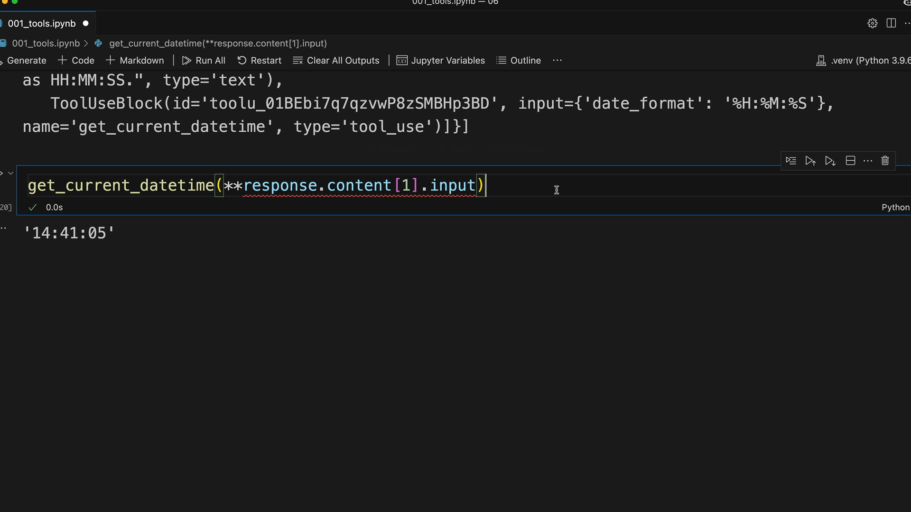
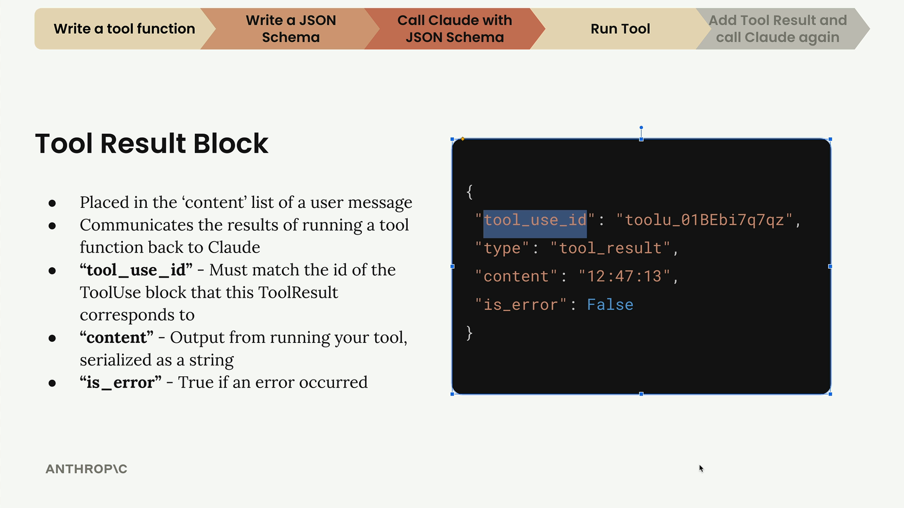
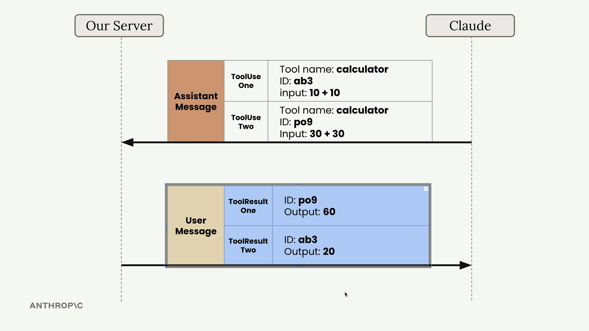
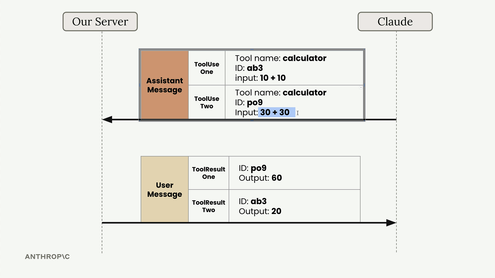
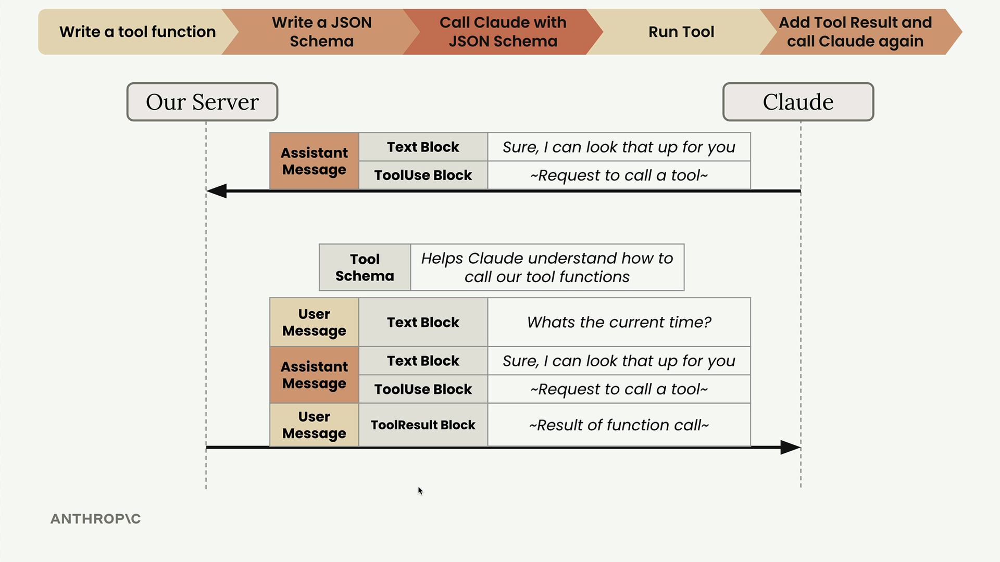

도구 결과 전송
Claude가 도구 호출을 요청한 후, 함수를 실행하고 결과를 다시 전송해야 합니다. 이 단계를 통해 Claude가 요청한 정보를 제공하여 도구 사용 워크플로를 완료합니다.
도구 함수 실행
Claude가 도구 사용 블록으로 응답하면, 입력 매개변수를 추출하여 함수를 호출합니다. 도구 매개변수에 접근하는 방법은 다음과 같습니다:
response.content[1].input이렇게 하면 Claude가 함수에 전달하려는 인수의 딕셔너리를 얻을 수 있습니다. 함수가 딕셔너리가 아닌 키워드 인수를 기대하므로, Python의 언패킹 문법을 사용합니다:
get_current_datetime(**response.content[1].input)
도구 결과 블록
도구 함수를 실행한 후, 도구 결과 블록을 사용하여 결과를 Claude에 다시 전송해야 합니다. 이 블록은 사용자 메시지 안에 포함되며, 도구를 실행했을 때 무슨 일이 일어났는지 Claude에게 알려줍니다.

도구 결과 블록에는 몇 가지 중요한 속성이 있습니다:
- tool_use_id - 이 ToolResult가 대응하는 ToolUse 블록의 id와 일치해야 합니다
- content - 도구 실행 결과를 문자열로 직렬화한 출력값
- is_error - 오류가 발생한 경우 True
여러 도구 호출 처리
Claude는 단일 응답에서 여러 도구 호출을 요청할 수 있습니다. 예를 들어, 사용자가 "10 + 10은 얼마이고 30 + 30은 얼마인가요?"라고 물으면, Claude는 두 개의 별도 ToolUse 블록으로 응답할 수 있습니다.

각 도구 호출에는 고유한 ID가 부여되며, 결과를 다시 전송할 때 이 ID를 맞춰야 합니다. 이를 통해 결과가 다른 순서로 도착하더라도 Claude가 어떤 결과가 어떤 요청에 해당하는지 알 수 있습니다.

후속 요청 구성
Claude에 대한 후속 요청에는 전체 대화 기록과 새로운 도구 결과가 포함되어야 합니다. 구조는 다음과 같습니다:
messages.append({
"role": "user",
"content": [{
"type": "tool_result",
"tool_use_id": response.content[1].id,
"content": "15:04:22",
"is_error": False
}]
})이제 완전한 메시지 기록에는 다음이 포함됩니다:
- 원래 사용자 메시지
- 도구 사용 블록이 포함된 어시스턴트 메시지
- 도구 결과 블록이 포함된 사용자 메시지
최종 요청 보내기
후속 요청을 전송할 때, Claude가 다른 도구 호출을 할 것으로 예상하지 않더라도 도구 스키마를 포함해야 합니다. Claude는 대화 기록의 도구 참조를 이해하기 위해 스키마가 필요합니다.
client.messages.create(
model=model,
max_tokens=1000,
messages=messages,
tools=[get_current_datetime_schema]
)
그러면 Claude는 도구 결과를 사용자를 위한 자연스러운 응답에 통합한 최종 메시지로 응답합니다. 이제 도구 사용 워크플로가 완료되었습니다 - 사용자 정의 함수를 통해 Claude가 실시간 정보에 접근할 수 있도록 성공적으로 설정했습니다.